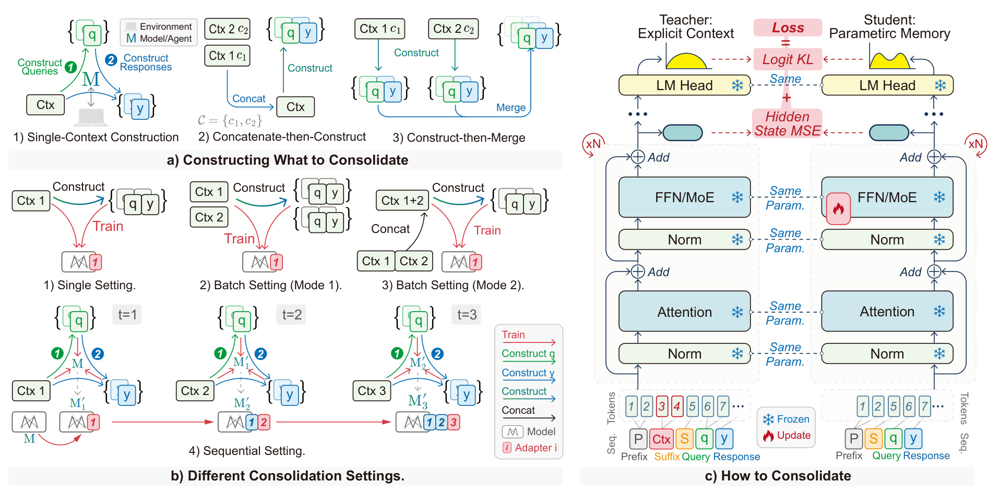
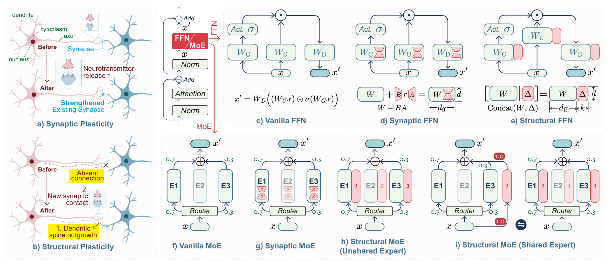
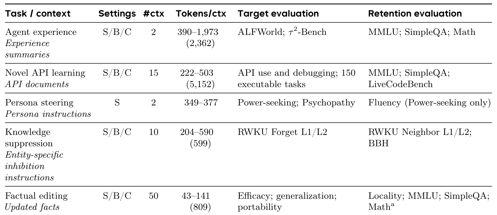
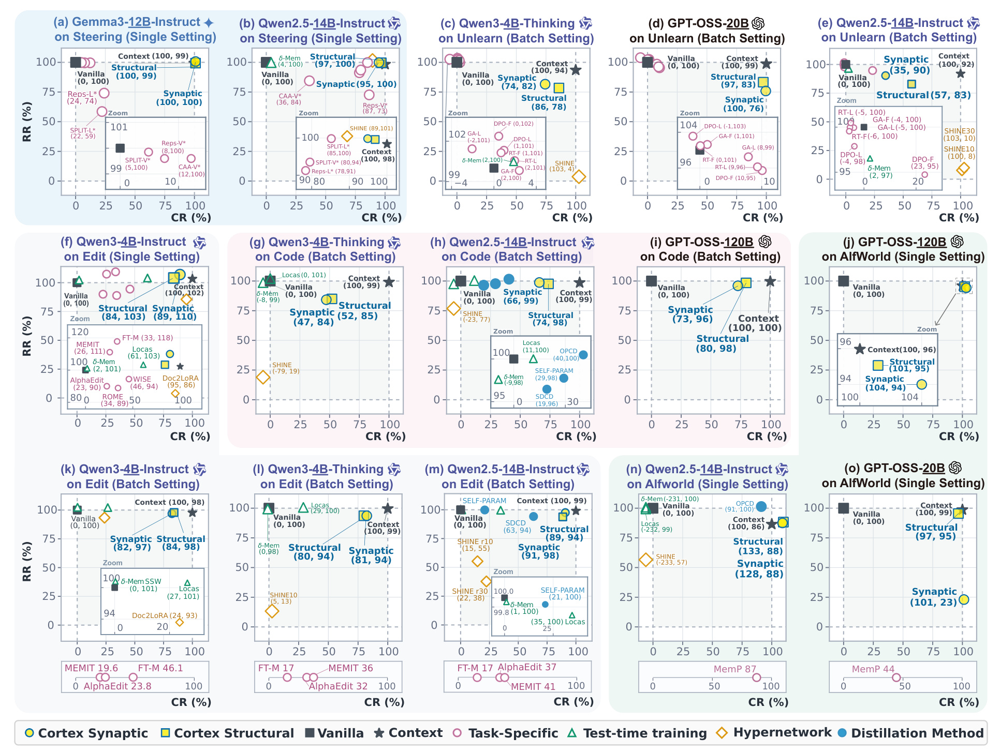
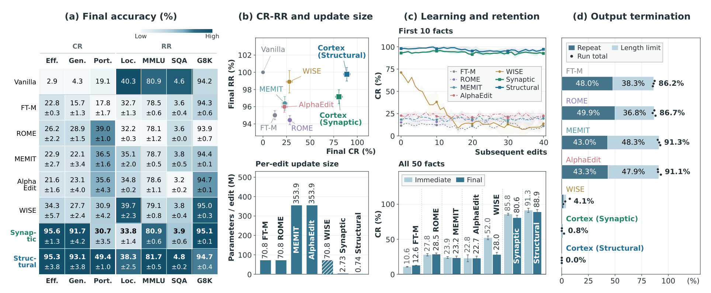
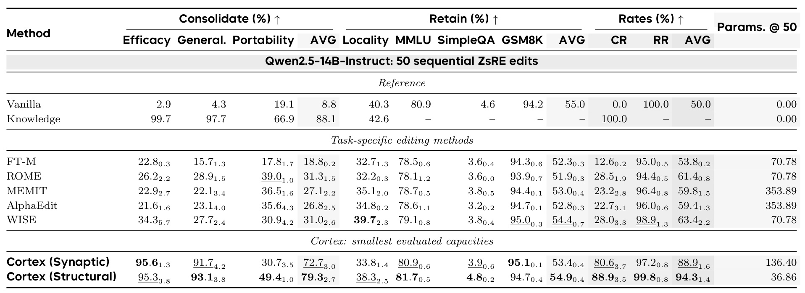
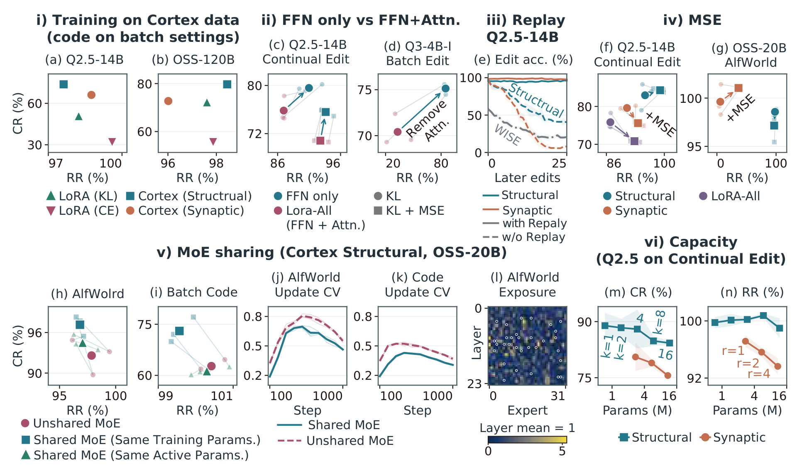

Cortex：把上下文收益巩固为参数记忆
- 论文：Cortex: Consolidating Context into Parametric Memory
- 作者：Jintian Zhang、Feng He、Xinnian Liang、Ziwen Xu、Haoming Xu、Haojing Huang、Shuangzhi Wu、Ningyu Zhang。
- 第一作者主机构：浙江大学；合作机构：ByteDance Seed、清华大学。
- 公开时间：arXiv v1 于 2026-10-14 16:03 UTC 提交；PDF 署名日期为 2026-10-15。
- 论文入口：arXiv:2610.20399。访问与全文核验日期：2026-10-16。
- 代码状态：PDF 提供 zjunlp/cortex 仓库地址，但本轮返回 HTTP 404，代码不可得，未完成实验复现。
上下文能改善大语言模型的表现，但移除上下文后这些收益可能消失；记忆巩固要让收益在没有原始上下文时保留下来，同时保护非目标能力。
1. 背景和问题
论文关注的并非模型能否在一次长提示里答对问题，而是一次经验是否改变了后续独立交互中的行为。给模型一份陌生软件包文档，它可以依靠已有编程能力调用接口；下一次没有文档时，同样的能力未必继续存在。代理从环境交互中总结出策略，如果每次都要把总结重新放回提示，经验的作用仍依赖检索和上下文供给。作者希望研究另一条互补路径：把经验引起的有益计算变化写入模型本身，让未来的问题通过已有前向计算访问这些变化。
外部记忆能够保存大量原始记录，也能保留出处、支持回滚和权限控制，但是否派上用场还取决于检索是否找到相关条目、检索结果是否装进窗口、模型是否正确解释这些条目。论文没有证明参数记忆应该取代外部记忆。它提出的是一个更窄的效果标准：如果某段上下文已经能让模型做好一类任务，能否将这份收益内化，并且不需要推理时继续取回原始文本？由此看，长上下文扩容、提示压缩与记忆巩固解决的是不同环节，不能仅凭都叫“记忆”就直接比较。
作者把这个问题称为记忆巩固，简称 MC。输入为一个现有模型，以及暂时可用的一组知识、经验或指令。输出为更新后的模型。任务不额外给出由开发者指定的未来问题分布或训练数据，如何构造有效学习输入也是算法责任。论文把事实修订、技能学习、人格行为引导、实体回答抑制放到同一框架，是因为这些任务都能用上下文指定希望发生的行为改变；统一之处在于结果要求，具体评分函数和改变范围仍然各不相同。
为防止把学习新技能与填补记忆混在一起，作者先定义上下文增益。令模型为 M，问题分布为 Q，上下文为 C，回答为 y，任务评分为非负且越高越好的 r。期望表现写作：
符号解释：M 是更新前的语言模型，Q 是查询分布，q 是从中抽样的问题，C 是提供给模型的上下文，y 是模型生成的回答，r 是任务相关评分；两个期望依次对查询和回答分布取平均。
如果模型即便拿到上下文也表现很差，主要障碍可能是能力不足，不能指望移除上下文后的参数更新直接保留本来就不存在的收益。论文针对的是上下文可以明显改善表现、但没有上下文就丢失这份改善的情况。设目标问题分布为 Q 的正向子集，非目标保留问题为负向子集，则上下文增益为：
符号解释：上下标 ctx 指上下文条件，Delta 表示有无上下文的期望表现之差，Q 的正向下标集合是应按当前上下文改变行为的目标查询；不含 C 的 Perf 使用无源上下文推理。
这里的正负不是二分类标签，而是“应该改变”和“应该保持”的评价范围。两个分布甚至可以重叠：同一条人格引导回答既可评人格遵循，也可评语言流畅度。事实编辑中，询问一个人的新出生日期属于目标，询问附近其他事实则属于保留范围。这使保留能力的含义必须逐任务解释，不能把所有 RR 都理解为一般知识与推理能力完好无损。
对于更新后的模型，作者使用两个比率：
符号解释：M 的撇号表示更新后模型，Q 的负向下标集合是非目标保留查询或评分标准；CR 用上下文增益归一化新增收益，RR 用原模型保留分数归一化更新后的同项分数。
CR 是巩固率，衡量移除原始上下文后恢复了多少上下文诱导收益；RR 是保留率，衡量非目标表现相对于原模型还剩多少。CR 等于一表示恢复了测得的全部收益，超过一也完全可能，因为训练后的模型可能优于原来的提示方式。RR 大于一意味着对应保留评分提升。两者都需要看分母：上下文增益过小会放大噪声，保留基准接近零时比率也不稳定。论文要求上下文增益显著为正，保留基准正且具有信息量。
因此，读到“恢复九成收益”不能将其当成九成准确率。假设原模型得二十分，加上下文得七十分，更新后得六十分，则恢复的是五十分增益中的四十分，CR 为八成，而最终准确率仍只有六成。这种相对标尺让不同任务的缺口可被统一展示，却没有消除任务本身难度差异、评分尺度差异和模型先验差异。对一条能答对的问题进行重述，与需要组合新事实完成推理，也仍然是不同要求。
论文还明确区分单次、批量与顺序三个协议。单次只写一份上下文；批量同时整合多份兼容上下文；顺序接收新经验，每轮完成后不能保留或回访过去的源上下文。顺序评价既要看所有仍然有效的旧记忆，也要相对于初始模型检查累积预期改变以外的能力。这一协议比只看最后一次编辑成功更接近持续学习，但本文的核心长序列实验证据仍是五十条兼容事实，而非无限运行的真实代理。它为长期经验积累建立了清楚的测量问题，也把尚未证明的部分留在边界之外。
这里还可以将几类常见接口放在同一坐标里理解。知识编辑通常从结构化修改请求出发，例如把某个关系的宾语替换为新值；Cortex 从自由文本上下文出发，所以需要自己发现值得训练的问题。上下文蒸馏已经使用有上下文教师与无上下文学生，本文进一步要求对保留范围、批量合并及顺序累积作明确评价。测试时训练强调在部署阶段利用新输入适配，而 MC 强调适配之后在未来无源上下文交互中的持续作用。外部参数模块即使保存了文档知识，如果每次仍需要检索器选择模块才能生效，也没有自动满足本文要求的由模型自身计算访问。这些区别来自输入、访问方式和评价目标，不能只按权重是否更新划界。
神经系统巩固提供了论文的设计灵感：快速获得经验与较慢整合长期知识相互配合，重放可能降低新旧经验干扰。不过作者没有把这一类比当成可检验的生物机制结论。对机器学习读者，更可靠的理解是约束优化：有限新增参数需要既模拟有上下文计算，又避免破坏其他输入上的旧计算。若任务所需改变和保留范围相互冲突，或者上下文包含互不兼容事实，这两个目标可能不能同时完全实现，当前实验选择的兼容上下文缓和了这一困难。
2. 方法
2.1 前瞻查询与排练数据
Cortex 按原文的三个问题组织：学什么、写到哪里、怎样写。首先，它不要求模型直接背诵源文档，而是让更新前的模型设想这些信息将来可能用于什么问题，再生成在上下文支持下的回答。令第 t 轮更新前模型为 M，查询生成指令为 I，排练样本数为 N，原文的生成过程可写为：
生成的查询描述未来使用场景，回答提供要内化的行为目标。三元组经过可选的任务过滤器形成新数据集。普通任务可以不筛选；代理任务是例外，其查询来自训练环境，回答是成功的离线交互轨迹，过滤器保留成功轨迹。没有访问留出的评价问题和参考答案是这一步的关键约束，否则所谓巩固会变成针对测试题蒸馏。教师与生成器均来自更新前模型，无需再引入更强外部模型。

图2把三件容易混淆的事情放到同一幅流程中。左上展示一次上下文如何变为查询和回答，也展示批量时两条合法路径：先拼接上下文再造例子，或先分别造例子再合并数据。前者让生成阶段看到跨文档关系，但也增加输入长度和相互干扰；后者保留每个样本自己的教师上下文，不意味着所有样本都使用拼接后的全文。左下按时间画出单次、两种批量和顺序更新。蓝色旧模块保持冻结，红色表示当前新增写入；冻结指的是参数，而非整个模型在旧问题上的输出。右侧才是训练信号：教师输入显式上下文，学生移除上下文，二者共享可对齐的查询和回答位置。输出概率与每层 FFN 残差之后的状态共同监督新增参数，意图补偿移除上下文带来的计算差异。
这张图也解释了为什么“自生成数据”不足以完整描述 Cortex。数据的用途在于预演未来调用方式，写入形式限制在指定模块，训练目标还约束内部表征；单独取出其中一步都不等价于全文方法。顺序协议中每轮新增模块在后续前向中继续激活，原始上下文则不再保存。一个实际风险是查询生成器可能想不到稀有场景、间接推理或恶意改写，于是学生只学到狭窄使用方式。前瞻查询为模型提供可学习的接口，但不保证覆盖真实未来请求分布。对于同一文档，若生成器反复给出词面近似的问题，样本数量增加也不会等比例增加使用情形的覆盖。此时需要检查问题的功能分布与组合深度，而非仅统计排练条数；本文以留出任务评价间接检验泛化，没有给出完备覆盖证明。
2.2 FFN可塑性与共享MoE
写入位置选择 Transformer 的前馈网络。对不含偏置的 SwiGLU 层，输入隐藏状态为 x，隐藏宽度为 d，前馈中间维度为 f，上投影、门控投影、下投影分别为 U、G、D：
其中逐元素乘法把内容通道与门控通道结合。Synaptic 版本冻结原矩阵，对三个投影各加入最大秩为 r 的增量：
A 与 B 是新训练的低秩因子。更新可合并回原矩阵，服务时不必保留独立低秩分支。Structural 版本则保持旧权重块完整，为 FFN 增加 k 个非线性通道：
新增上投影与门控矩阵的形状是 k 乘 d，下投影是 d 乘 k，因此每层新增三个矩阵，共三乘 k 乘 d 个参数。它可折叠为更宽的标准 FFN，中间维度由 f 变为 f 加 k。同样设置 k 与 r 时，低秩更新需要三乘 r 乘（d 加 f）个参数，Structural 在此比较下训练参数更少，但它扩大部署宽度。这是训练可塑性、参数保留与服务成本之间的真实权衡，而不是“新增结构没有成本”。

图3上半的生物图示只是设计类比，不证明模型获得了与海马或皮层相同的机制。网络图中的红色部分才对应实际可训练参数。Synaptic 用低秩乘积改变原有投影所实现的函数，Structural 则在旧 FFN 输出旁增加新的非线性路径。下半展示 MoE 扩展：如果每个专家各有新增分支，那么一个 token 只能通过路由选中的专家分支，低频专家得到的直接梯度很少；共享分支让每个有效 token 都经过同一组新增通道。图中共享结构最后可复制折入各专家，因此“共享训练”与“折叠后标准前向”是两个阶段。这里冻结的是路由器参数，上游表示随写入改变之后，路由决策仍可能变化，不能将固定路由器解释为每个 token 的路由永远不变。共享分支的折叠有明确数学前提。设专家函数为 E，路由权重为 g，共享新增分支为下标 s：
只有路由权重求和为一时，右边的复制折叠才与左边严格等价。共享分支与独立分支还必须按总训练参数或每 token 激活参数对齐预算，否则无法把结果归因到训练暴露。长期更新时，每轮新增通道让容量随写入次数增长，虽然过去通道参数冻结，新通道仍会改变后续层输入。模型行为是一连串复合函数，旧参数不变不足以阻止新路径干扰旧事实，这也是下一节需要回放约束的原因。共享结构的另一个含义是每个专家面对新增知识时拥有相同的附加函数，模型仍依赖原专家区分原有专长。它降低有限样本下分支缺乏训练的风险，却可能牺牲对不同专家分别写入差异信息的灵活性，因此必须通过匹配预算的实验而非结构直觉判断收益。
2.3 上下文到参数记忆的蒸馏
教师输入含固定前缀、源上下文、后缀、查询和强制输入的回答；学生输入保留相同支架、查询与回答，省略源上下文。更新前模型作为冻结教师，本轮只优化新参数。训练集还混入少量通用查询与模型自身回答，用于保护非目标行为。连续编辑中这些通用目标由初始模型生成并缓存，避免把逐轮漂移后的行为当成唯一保持目标。论文对齐教师与学生共享的监督位置，并同时匹配输出分布及 FFN 残差更新后的隐藏状态。设小批量为 B，对齐监督位置集合为 J，层数为 L，隐藏维度为 d，温度为 T，权重分别为 beta 和 alpha：
上标 T 和 S 分别表示教师与学生，h 是每层 FFN 残差之后的状态，psi 是本轮新增参数。两个损失平均相同的监督 token，MSE 再按层数和隐藏维度归一化。哪些位置被监督依任务而定：可以仅监督回答或动作预测，也可以包含所有对齐的非上下文位置，填充位置排除。不能把教师因为多了上下文产生的位置整体平移后直接当成学生同位置；对齐集合就是为了明确这一比较接口。为降低保存教师目标的成本，论文仅保留教师 top-K 词表项，并重新归一化这些项的教师概率；学生仍在完整词表上归一化：
符号解释：z 是 logits，K 是教师概率最高的若干词项集合。输出 KL 教学生复现有上下文时的预测行为，状态 MSE 给每层新增 FFN 提供补偿上下文移除影响的中间目标。附录理论讨论的是在一定架构假设和有限状态条件下实现补偿的可能性，不构成任意上下文都能被有限宽度固定更新精确写入的普遍保证。实际效果仍由有限排练数据与优化过程决定。
顺序更新另有查询回放：持久保存旧查询，不保存旧源上下文；每轮让更新前模型在无旧上下文条件下重新生成回答与蒸馏目标，再与新例子一起训练。回放时教师和学生收到相同输入，作用是维持过去已学到的函数。旧回答和蒸馏目标是临时数据，推理不读取回放缓冲。回放保留的是当前教师还能表达的旧能力，所以若一次错误更新已污染教师，后续再生成目标可能继续巩固偏差；论文的小规模受控序列并未排除这种现实部署风险。
3. 实验结果
3.1 五类任务与评测协议

表1的作用是界定每个结果究竟测了什么。代理经验来自 ALFWorld 与工具交互环境，目标看成功率，保留看知识和数学基准。新 API 学习使用十五个近期软件包，每个包含七道调用题和三道调试题，共一百五十道可执行测试题；保留包括已有编程能力。人格引导只有单次设置，因为不同人格指令可能互相冲突；其中 Power-seeking 的 RR 仅为同一回答上的流畅度保留，Psychopathy 根本没有报告 RR。实体抑制用目标答案重叠降低来计算有利方向，而邻居事实及推理任务用于保持评价。事实编辑既看直接使用，也看改写泛化和进一步推理，附近事实则属于保留范围。表内的单次、批量、连续标记表示协议支持，不能理解成每个模型、每个任务都完成了所有组合。
实验覆盖四十亿至一千二百亿参数的稠密与 MoE 模型，包括指令、思考及多模态骨干，但输入全是文本，因此不能从骨干支持多模态推出已经证明视觉经验巩固。每个模型与任务对的上下文经过人工构造或适配，以引出足够大的上下文增益。上下文构造不接触留出问题与参考答案。ALFWorld 从一百四十个训练侧游戏收集成功轨迹，在互不相交的一百三十四个游戏评价；另一个工具交互环境使用训练实例收集经验，在一百个测试任务评价，巩固阶段不继续与环境交互。
这个协议的长处是提供了明确的“有上下文教师”参照，使能力恢复和遗忘可以配对；局限是其上下文质量有人工帮助，尚未证明一个自主系统在未经筛选的真实日志上也能得到同样收益。评分先在每道问题或每个回合内部聚合重复生成，再跨评价项聚合，最后由聚合分数计算 CR/RR，而非先算各子任务比例再平均。这个次序很重要，后者会放大低分母子任务，改变指标含义。
3.2 单次与批量巩固

图5每一面板对应一个任务、骨干和设置，横轴为 CR，纵轴为 RR，点旁数字是两者的百分数。右上方向通常更好，但背景颜色不同的面板不能直接合并排名。十五个有完整双指标的面板中，至少一个 Cortex 版本处在经验帕累托前沿，意思是没有同面板其他方法同时在两指标上严格更好，并不意味着 Cortex 每一项都取最高值。人格引导恢复约九成五至全部上下文收益，同时接近完整流畅度保留；批量事实编辑的 CR 约八成至九成一。API 学习的恢复更有限，三种展示设置中 Structural 比 Synaptic 高约五至八个百分点。图里也显示有方法可以取得较高目标恢复但付出巨大保留损失，或几乎完全保留旧能力但没有真正学会新增信息。
单条事实编辑提供了一个有用反例：Doc2LoRA 在 Qwen3 指令模型上达到约百分之九十五 CR，高于 Cortex 的约八十四至八十九，但 locality RR 只有约八十六，Cortex 则约一百零三至一百一十。只用目标成功率会忽略附近事实的代价。批量代码任务中，Qwen2.5 上 Cortex 达到百分之六十六至七十四 CR、百分之九十八至九十九 RR；使用不同蒸馏框架的 OPCD 约四十一 CR，SELF-PARAM 约二十九，SDCD 约十九。高保留的 TTT 基线在部分代码面板仍只有负九至十一 CR，说明没有破坏不等于成功写入。
两个写入版本也不是固定优劣关系。完整单次与批量结果中，Structural 在八个代码设置里的六个 CR 更高，Synaptic 在八个事实编辑设置里的七个领先。GPT-OSS-20B 的 ALFWorld 上两者 CR 接近，约九十七与一百零一，RR 却为九十五与二十三，暴露出目标表现掩盖不了的能力损失。Qwen2.5 的 ALFWorld 中 CR 能到一百二十八至一百三十三，超过有上下文参照，但 RR 约八十八，仍需承担代价。超出参照说明训练有机会整理和重组经验，不能据此把该参照当作理论上界。
更困难的工具交互环境没有复刻这一结果。GPT-OSS-20B 在该环境中原模型成功率约六十点三，有上下文约六十四点七，Structural 为六十二，Synaptic 为五十六点三；对应 CR 为三十八点五与负九十二点三。Synaptic 的 RR 仍有九十八点五，也无法抵消目标任务退化。这同时提醒读者：当上下文缺口只有四点四个百分点，归一化 CR 会非常敏感，应优先同时查看原始成功率。抑制任务也有局部损伤，邻近知识评分比原模型下降约九至二十分，而一般推理下降较小，说明平均保留可以掩盖最相关邻域的伤害。
3.3 五十次连续编辑
核心连续实验在 Qwen2.5-14B-Instruct 上固定顺序写入五十条兼容 ZsRE 事实。Structural 每次增加一个通道，Synaptic 每次用秩一更新；旧骨干与旧写入冻结，保留历史查询并再生回答。每次评价全部已见事实，每题七次生成，每五次编辑检查固定知识和数学子集，报告三个训练种子。该设置明确限定了摘要所说的百分之八十八点九与九十九点八，不能推广为所有骨干、所有技能或者任意长序列的保证。

图6把最终表现、每次写入规模、旧事实随时间变化、输出停止原因放到一起。最终 Structural 达到百分之八十八点九 CR 与九十九点八 RR，Synaptic 为八十点六与九十七点二；按最终 CR 最强的外部基线 ROME 约二十八点五。比较全部五十条事实“各自刚写完”与“最后一次写完”时，Structural 从九十一点三降至八十八点九，仅丢二点四；Synaptic 从八十五点八到八十点六，丢五点二；WISE 从五十二降到二十八，丢二十四。图中前十条事实按经历的后续编辑次数对齐，避免后写事实因为更年轻而显得保留更好。经历四十次后续编辑后，两版本对这十条事实仍保留约九十七点二与九十二点六的平均 CR。
这组证据比只报最终一个分数更有解释力。外部基线的立即到最终变化很小，可能是它们最初就没学好；不能把小下降直接当作好记忆。Cortex 的优势来自初始获得较强、之后衰减也较小。输出诊断则发现，在最终检查点，传统几种编辑方法的大量回答因重复或长度上限停止，而 Structural 与 Synaptic 对应比例为零和零点八。每轮七百条响应，观察上限五百一十二 token。低重复与更强巩固相伴，但这仍是诊断关联，尚不足以说明重复是基线表现差的唯一原因。四组面板共同提示，应把更新规模和响应质量当作独立维度核对：某方法修改很多权重却可能只学到狭窄答案模板，某方法高直接准确率也可能缺少迁移。误差条表示三个训练运行的样本标准差，而不是对全部未来经验流给出的置信保证；固定事实顺序及固定评测子集使纵向变化可比，也限制了结论覆盖的任务多样性。

表14让归一化比率回到实际效用。Structural 的直接事实应用约九十五点三，改写约九十三点一，但组合推理迁移只有四十九点四；Synaptic 的直接应用几乎相同，为九十五点六，迁移却只有三十点七。这说明九成左右 CR 仍没有解决复杂运用新事实的问题。Structural 的 MMLU、SimpleQA 与 GSM8K 分数接近初始模型，局部邻近事实则从四十点三到三十八点三；聚合 RR 接近一百并不表示每一项都毫无下降。SimpleQA 原始基准只有四点六，保留它并不等于具备高水平事实问答。最后一列是第五十次更新时的累计新增或修改参数，Structural 约三十六点八六百万，Synaptic 约一百三十六点四百万，不能和每次零点七四与二点七三百万混为一谈。
原文进一步把组合推理拆成获得与遗忘：Structural 刚写入时迁移准确率五十二点四，最终四十九点四；Synaptic 刚写入三十六点一，最终三十点七。因此结构版本的迁移优势一开始就存在，后续保持又更好。这个拆分限制了“只要回放就能得到组合泛化”的解释，写入表示本身已经影响了能够获得什么。对系统设计而言，应该同时记录每条记忆的直接问答、改写及组合使用，而不能只统计更新接口返回成功。
3.4 消融与训练暴露

图7集中展示六类干预。相同 Cortex 数据并不能让普通 LoRA 自动达到相同表现；Qwen2.5 批量代码中 Structural 比用 KL 的 LoRA 高二十三个 CR 点，而在另一骨干上 KL 又比答案交叉熵高十六点六，说明数据与软分布监督各有贡献。相同秩时把注意力也纳入更新没有带来更好恢复，连续编辑里限制到 FFN 在仅 KL 下分别改善 CR 与 RR 三点八和四点零。隐藏状态 MSE 则是权衡项：Synaptic 秩四时提高 RR 二点七却降低 CR 四点零；Structural 较宽配置却能两项同升。不能因此把 MSE 写成任何设置下都提高所有指标的免费增益。
回放消融尤其值得重视。去掉历史查询回放后，仍然保留当前样本和每轮十六个通用样本，旧模块也仍冻结。在第一批二十五条事实经历二十五次后续编辑后，两版本有回放都超过百分之九十六直接与改写准确率，没有回放时 Structural 只有四十点五，Synaptic 只有八点零。固定历史问答的对照与重新生成回答的查询回放，最终平均 CR 差不到一个点，支持“只保留查询也可以保护过去知识”的结论，但只在此序列与教师质量下成立。
MoE 消融把总训练权重和单 token 激活权重分别匹配。在相同总权重预算下，共享扩展在 ALFWorld 与代码的 CR 分别高四点六和十点三，但 RR 大约低一个点。在相同激活预算下，共享扩展只训练八分之一的权重，CR 与独立扩展相差不超过两个点，这是四选三十二专家路由下的结果。作者监控新增下投影通道的均方根位移，用变化的标准差除以均值作为 CV；共享分支 CV 较低表示更新更均匀，不表示更新幅度更大。ALFWorld 中七百六十八个层与专家组合里有三十二个分支在每个种子都低于该层平均暴露的百分之一，支持稀疏分支训练不足这一解释。
容量扫描在相同训练配方下并未得到越宽越好的规律。Structural 从一个到十六个通道、Synaptic 从秩一到四，最小配置在各自家族反而取得最高平均 CR。合理解读是这个测试序列下受限制的写入配合回放足够有效，不能推导出容量增加普遍有害，更不能推导出长期无限写入不需要扩容。优化步数、正则强度和新增宽度之间可能需要一起调整，本文的共同配方控制让结论清楚，但也限制了对每种容量最佳可达水平的判断。
4. 总结
Cortex 的主要贡献是把“参数记忆”从一句笼统目标拆成可核对的链条：先证明上下文有用，再构造未来查询，在明确的 FFN 写入接口中蒸馏这些收益，最后同时测恢复和保留。前瞻排练、两种可合并更新、共享 MoE 分支和状态监督连接成一个整体。连续编辑证据较有说服力，因为它同时展示初始获得、随时间遗忘、原始分数和新增规模；单次与批量结果又表明，其优势受任务、骨干与写入方式影响，没有稳定通吃的版本。
可以迁移的第一点是评价方法。做长期代理记忆时，应将“有经验上下文时能达到什么”作为可观测参照，并和无经验基准一起保存，区分能力不足和记忆未持久化。第二点是生成训练数据时关注未来调用方式，而不是只让模型重述经验文本；这能把文档或策略转成可测试的行为。第三点是把保留集分成一般能力和语义近邻，防止总体平均掩盖最容易受损的相关知识。第四点是将单次获得与后续衰减分开记录，避免把从未学会的稳定低分当作优秀抗遗忘能力。这些是由论文协议引出的设计启发，尚未构成对真实业务系统的效果保证。
知识抑制实验只证明在给定探针下减少了目标回答重叠，不证明知识已从参数中删除。这一限制对于隐私遗忘和安全应用尤其重要。行为拒答可被提示改写、间接查询或其他访问方式绕过，本文没有给出不可恢复删除证明。人格引导的流畅度保留同样不能替代广泛能力与安全评估，也不能把行为倾向数据集的名称当作对模型临床人格的判断。
还需保留四项明确局限。其一，测试上下文经过人工构造并针对骨干适配，现实经验的噪声、冲突和错误不在同等控制之下。其二，顺序主实验只有五十条兼容事实，更长序列、相互矛盾的更新、回滚及删除能力尚未被充分验证。其三，Structural 每轮扩展部署宽度，长期显存、延迟与检查点管理成本不能由单轮训练参数小直接推出。其四，代码入口本轮不可访问，本文没有独立复现原始结果，实验数值均是作者报告，工程可用性仍待验证。
后续值得跟进三类实验证据：一是用固定真实请求流检验前瞻查询覆盖率，特别关注未见组合与长尾调用；二是在相同服务预算下比较检索、上下文压缩、参数巩固及混合方案，把更新成本和推理收益一起计入；三是扩大顺序长度并加入冲突事实、失效经验和错误教师，测量回放能否纠偏而非继续固化错误。若作者代码开放，应先复现一百四十亿级可承受骨干上的小规模写入，逐项核对对齐 token、教师 top-K 概率、共享路由归一化及原始评分聚合，确认实现与论文定义一致后，再讨论把它接入持续运行的代理。
还有一个可操作的阅读顺序是先检查原始任务成功率，再看上下文缺口，最后看相对恢复与保留。这样才能识别“教师本身只比基线好一点”的脆弱结论，也能避免将局部流畅度误当作全面可靠性。对于更新吞吐很高的系统，除每次参数量，还应记录累计检查点大小、合并耗时以及撤回单条记忆的可行性；论文的可合并性简化前向结构，却没有替这些生命周期问题给出完整答案。